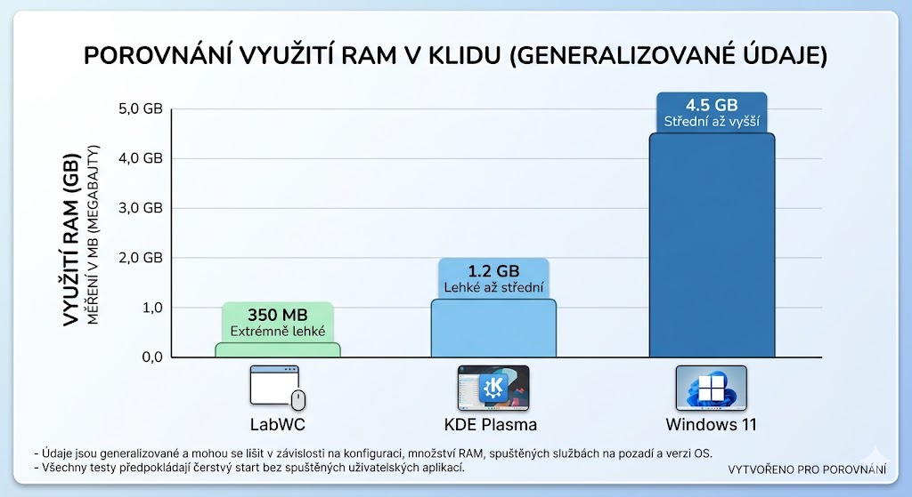

Cíl kapitoly: Zhodnotit hardwarové nároky a rychlost odezvy Labwc v porovnání s tradičními a těžkotonážními desktopovými prostředími.
Jedním z hlavních důvodů, proč se zkušení uživatelé rozhodují pro "Window Managery" typu Labwc, je jejich bezkonkurenční rychlost a minimální spotřeba systémových prostředků. Získaný výkon tak zůstává plně k dispozici uživatelským aplikacím, hrám nebo vývojářským nástrojům.
Při startu do čisté relace (tzv. "idle" stav) spotřebovává samotný kompozitor Labwc často méně než 80–120 MB RAM. I při započtení externích komponent, jako je panel (Waybar) a správce tapety, se systém hravě vejde do 250 MB. Ve srovnání s prostředím GNOME, které po startu obvykle zabírá 1 GB až 1,5 GB RAM, je Labwc neuvěřitelně efektivní.
Díky abstrakční vrstvě wlroots a nativnímu vykreslování přes Wayland je zátěž CPU při přesouvání oken prakticky nulová. Vykreslování je hardwarově akcelerováno grafickou kartou, přičemž nedochází ke zbytečnému překreslování neviditelných částí obrazovky. Absence složitých grafických animací a efektů (jako má např. KWin v KDE) šetří baterii u přenosných zařízení.
Wayland by design řeší problém tearing (trhání obrazu) tím, že každé překreslení obrazovky je synchronizováno s obnovovací frekvencí monitoru (V-Sync). Labwc tak nabízí dokonale plynulý zážitek a bleskovou odezvu vstupu (input latency), což ocení nejen běžní uživatelé, ale i profesionálové pracující s grafikou nebo hráči kompetitivních her.
